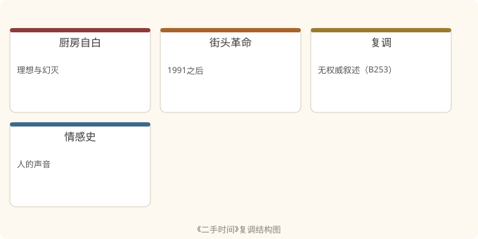

二手时间
一、基本信息
| 作者 | 斯韦特兰娜·阿列克谢耶维奇 |
|---|---|
| 成书/出版 | 2013年出版（Britannica：Secondhand Time (2013)） Svetlana Alexievich — Encyclopaedia Britannica（百科全书） |
| 国别/地区 | 白俄罗斯 |
| 时代 | 现当代 · 21世纪 |
| 体裁 | 口述实录 |
| 语言 | 俄语 |

《二手时间》复调结构图（主题·结构图）
二、创作背景
Britannica：'Vremya sekond chend'（2013）——记录苏联解体后的'红色人'生活（语境转述）；方法（B253）：'hybrid literary genre that evolved as the closest possible approximation to real life'。
诺奖授奖词（B253）：'for her polyphonic writings, a monument to suffering and courage in our time'。
三、内容脉络
上卷'启示录的慰藉'与下卷'空空的装饰'（卷名通说待核）：苏联解体后20年的普通人自白（通说待核）。
'革命'的街头与厨房：'二手'的岁月（通说待核）。
四、主要人物表
| 人物 | 身份 | 说明 |
|---|---|---|
| 受访者群 | 普通人 | 让人的声音自己讲述（B253） |
五、主题与艺术特点
- '人类情感的历史'（B253：a history of human feelings）。
- 红色世纪的'二手时间'：理想与幻灭（通说）。
- 复调：无权威叙述者（B253：polyphonic writings）。
六、影响与评论
- Britannica：2015年诺奖——'a monument to suffering and courage in our time'（B253）。
Svetlana Alexievich — Encyclopaedia Britannica（百科全书） - 口述文学文类的世界影响（通说）。
Svetlana Alexievich — Encyclopaedia Britannica（百科全书）
七、阅读建议
难点
- 口述体——多人称切换。
- 苏联解体（1991）背景注释。
- 《二手时间》（中信出版社，通说待核）。
对照《古拉格群岛》：从档案到声音的两种记录。
八、待核实
- 卷名与篇目核对。
- '红色人'（red man）概念核对。
- 中译本（中信2016说）核对。